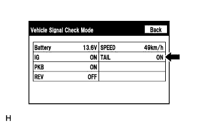

СИСТЕМА НАВИГАЦИИ (для моделей с жестким диском) > Подсветка панельного переключателя не загорается при переводе переключателя освещения в положение TAIL |
| 1.ПРОВЕРЬТЕ СИГНАЛ АВТОМОБИЛЯ |
|  |
Перейдите в режим "Vehicle Signal Check" (проверка сигналов автомобиля) и выберите "Vehicle Signal Check" (Нажмите здесь).
Убедитесь в том, что дисплей меняет состояние между ON (ВКЛ) и OFF (ВЫКЛ) в зависимости от работы переключателя освещения.
| Положение переключателя освещения | Дисплей |
| TAIL или HEAD | ON (ВКЛ) |
| OFF (ВЫКЛ) | OFF (ВЫКЛ) |
|
| ||||
| OK | ||
| ||